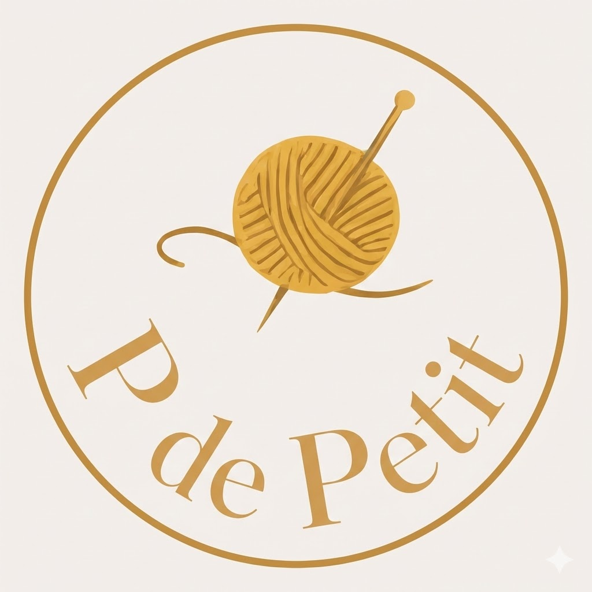

Explora el catálogo
Elige una pieza o conjunto. Si quieres otro color, también puedes preguntarme.

P de PetitElige una pieza o conjunto. Si quieres otro color, también puedes preguntarme.
Envíame el nombre del producto o una captura. Te respondo con disponibilidad, precio y tiempos.
Creo o actualizo el anuncio para ti, y finalizas allí el pago y el envío.
Cuando el pedido esté confirmado, preparo el paquete y lo envío.

P de Petit está en Valencia ciudad. Escríbeme antes para confirmar disponibilidad y acordar una visita o recogida.
Sí. Dime tu localidad y te confirmo las opciones, el coste y el plazo antes de cerrar el pedido.
Sí, acepto encargos de crochet personalizados. Cuéntame tu idea, colores y fecha; confirmaré si puedo realizarla, el precio y el tiempo de preparación.